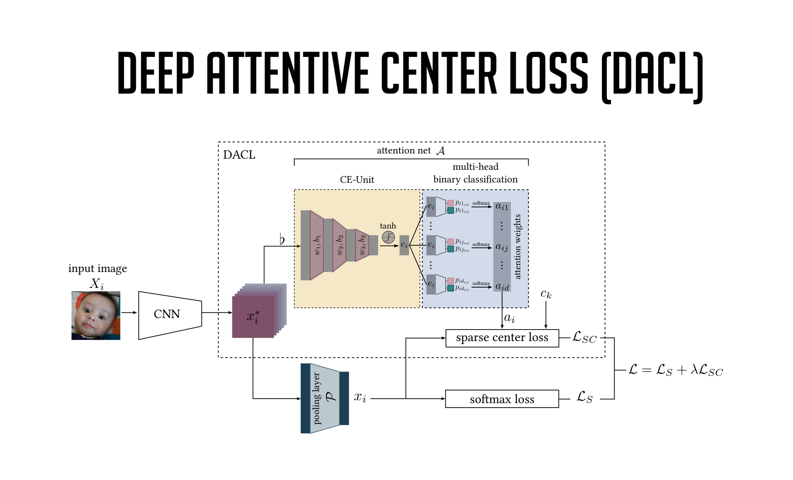

Status: running
Current Model: DACL

{}
The following page was created for research purposes and is used to evaluate different methods for real-time emotion recognition based on neural networks and machine learning. For more information, please refer to the linked bachelor thesis. For any questions or comments, please feel free to contact me at said.togru@gmail.com.
LinkedIn
https://www.linkedin.com/in/said-togru-3244591ba
Creator and Author: Said Togru
Facial expression recognition.
By Said Togru.